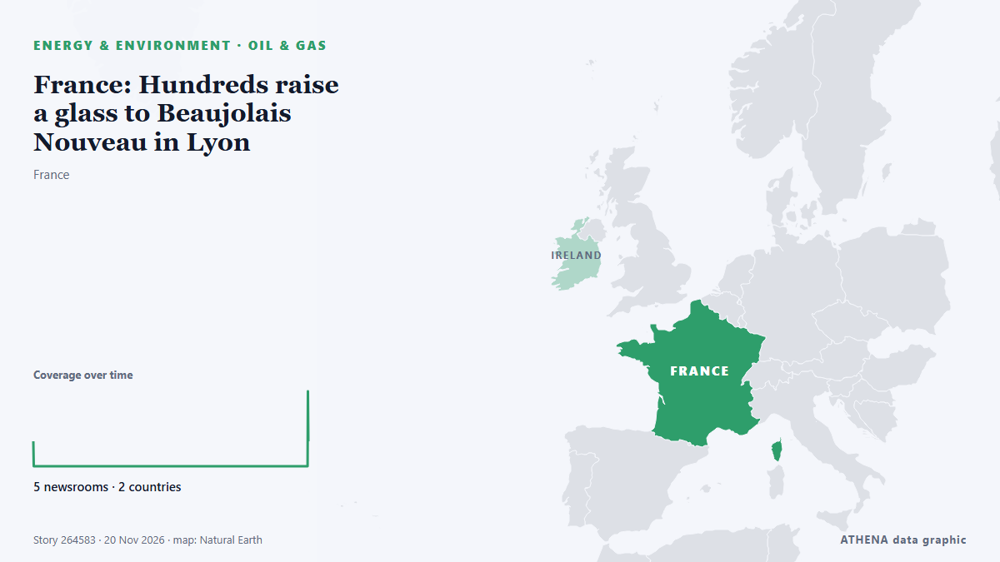

France: Hundreds raise a glass to Beaujolais Nouveau in Lyon 
Map of France. 5 newsrooms in 2 countries What happened Lyon welcomed the arrival of Beaujolais Nouveau with a lively nighttime parade of wine barrels, flaming torches and brass music. from Euronews English
What changed 1 new report from 1 outlet in the last 24 hours.
See the sources › Evidence: Limited
In brief Reported independently by 5 outlets in 2 countries since 17 Nov, first by The Local France; coverage is fading. ATHENA finds no risk indicators in the coverage. Confidence is 64% (moderate), with 5 independent outlets corroborating it and an average source reliability of 75%. Outlets by country: France (4), Ireland (1). Coverage: 17 Nov to 20 Nov, 35143 hours.
Why it matters: Energy and resource developments affect fuel and power prices, supply security and climate commitments.
What changed: 1 new report in the 24 hours to 20 Nov.
ATHENA Analysis Desk · automated analysis of 5 reports from 2 countries First seen 17 Nov 2022, 10:17 UTC Updated 20 Nov 2026, 17:31 UTC
Automated Selected, grouped and scored by ATHENA's published method from 4 independent outlets. The headline is the outlet's own; ATHENA's sentences follow fixed patterns - no generative AI writes them. How it works →
How to read this page What you are reading 5 outlets in 2 countries reported this event. The reports below are listed in the order they appeared; each headline opens the original article. ATHENA writes none of the reports. Our reading For the record — The reports describe a completed, domestic, commercial or personal matter. We list it so you can see who reported it and when. We are not tracking a risk of wider conflict here.How much evidence Limited Treat this page as an early report.After repeats, off-topic items and stale reports are removed, 4 of the 5 listed reports are counted; 100% of the headlines match the event.
What this does not mean ATHENA measures how an event is reported, not whether it is true. This is not a forecast, a judgement on who is right, or advice. What would change it Reports from other independent outlets showing a different development, or a firm confirmation or denial from an official source. Reading R2 · refreshed with every update of this page. ATHENA has not yet published a track record for these readings; when it does, it will be linked here.
At a glance 3.3 Importance
0.0 Risk · none detected
64% Confidence
How we score this ›
Selected, scored and written by ATHENA's published methodology. No editor intervenes in individual events. How this is produced ›
peak 3 17 Nov 10:17 UTC 20 Nov 10:17 UTC 17 Nov 10:17 UTC · 1 report 19 Nov 10:17 UTC · 0 reports 21 Nov 10:17 UTC · 0 reports 23 Nov 10:17 UTC · 0 reports 25 Nov 10:17 UTC · 0 reports 27 Nov 10:17 UTC · 0 reports 29 Nov 10:17 UTC · 0 reports 01 Dec 10:17 UTC · 0 reports 03 Dec 10:17 UTC · 0 reports 05 Dec 10:17 UTC · 0 reports 07 Dec 10:17 UTC · 0 reports 09 Dec 10:17 UTC · 0 reports 11 Dec 10:17 UTC · 0 reports 13 Dec 10:17 UTC · 0 reports 15 Dec 10:17 UTC · 0 reports 17 Dec 10:17 UTC · 0 reports 19 Dec 10:17 UTC · 0 reports 21 Dec 10:17 UTC · 0 reports 23 Dec 10:17 UTC · 0 reports 25 Dec 10:17 UTC · 0 reports 27 Dec 10:17 UTC · 0 reports 29 Dec 10:17 UTC · 0 reports 31 Dec 10:17 UTC · 0 reports 02 Jan 10:17 UTC · 0 reports 04 Jan 10:17 UTC · 0 reports 06 Jan 10:17 UTC · 0 reports 08 Jan 10:17 UTC · 0 reports 10 Jan 10:17 UTC · 0 reports 12 Jan 10:17 UTC · 0 reports 14 Jan 10:17 UTC · 0 reports 16 Jan 10:17 UTC · 0 reports 18 Jan 10:17 UTC · 0 reports 20 Jan 10:17 UTC · 0 reports 22 Jan 10:17 UTC · 0 reports 24 Jan 10:17 UTC · 0 reports 26 Jan 10:17 UTC · 0 reports 28 Jan 10:17 UTC · 0 reports 30 Jan 10:17 UTC · 0 reports 01 Feb 10:17 UTC · 0 reports 03 Feb 10:17 UTC · 0 reports 05 Feb 10:17 UTC · 0 reports 07 Feb 10:17 UTC · 0 reports 09 Feb 10:17 UTC · 0 reports 11 Feb 10:17 UTC · 0 reports 13 Feb 10:17 UTC · 0 reports 15 Feb 10:17 UTC · 0 reports 17 Feb 10:17 UTC · 0 reports 19 Feb 10:17 UTC · 0 reports 21 Feb 10:17 UTC · 0 reports 23 Feb 10:17 UTC · 0 reports 25 Feb 10:17 UTC · 0 reports 27 Feb 10:17 UTC · 0 reports 01 Mar 10:17 UTC · 0 reports 03 Mar 10:17 UTC · 0 reports 05 Mar 10:17 UTC · 0 reports 07 Mar 10:17 UTC · 0 reports 09 Mar 10:17 UTC · 0 reports 11 Mar 10:17 UTC · 0 reports 13 Mar 10:17 UTC · 0 reports 15 Mar 10:17 UTC · 0 reports 17 Mar 10:17 UTC · 0 reports 19 Mar 10:17 UTC · 0 reports 21 Mar 10:17 UTC · 0 reports 23 Mar 10:17 UTC · 0 reports 25 Mar 10:17 UTC · 0 reports 27 Mar 10:17 UTC · 0 reports 29 Mar 10:17 UTC · 0 reports 31 Mar 10:17 UTC · 0 reports 02 Apr 10:17 UTC · 0 reports 04 Apr 10:17 UTC · 0 reports 06 Apr 10:17 UTC · 0 reports 08 Apr 10:17 UTC · 0 reports 10 Apr 10:17 UTC · 0 reports 12 Apr 10:17 UTC · 0 reports 14 Apr 10:17 UTC · 0 reports 16 Apr 10:17 UTC · 0 reports 18 Apr 10:17 UTC · 0 reports 20 Apr 10:17 UTC · 0 reports 22 Apr 10:17 UTC · 0 reports 24 Apr 10:17 UTC · 0 reports 26 Apr 10:17 UTC · 0 reports 28 Apr 10:17 UTC · 0 reports 30 Apr 10:17 UTC · 0 reports 02 May 10:17 UTC · 0 reports 04 May 10:17 UTC · 0 reports 06 May 10:17 UTC · 0 reports 08 May 10:17 UTC · 0 reports 10 May 10:17 UTC · 0 reports 12 May 10:17 UTC · 0 reports 14 May 10:17 UTC · 0 reports 16 May 10:17 UTC · 0 reports 18 May 10:17 UTC · 0 reports 20 May 10:17 UTC · 0 reports 22 May 10:17 UTC · 0 reports 24 May 10:17 UTC · 0 reports 26 May 10:17 UTC · 0 reports 28 May 10:17 UTC · 0 reports 30 May 10:17 UTC · 0 reports 01 Jun 10:17 UTC · 0 reports 03 Jun 10:17 UTC · 0 reports 05 Jun 10:17 UTC · 0 reports 07 Jun 10:17 UTC · 0 reports 09 Jun 10:17 UTC · 0 reports 11 Jun 10:17 UTC · 0 reports 13 Jun 10:17 UTC · 0 reports 15 Jun 10:17 UTC · 0 reports 17 Jun 10:17 UTC · 0 reports 19 Jun 10:17 UTC · 0 reports 21 Jun 10:17 UTC · 0 reports 23 Jun 10:17 UTC · 0 reports 25 Jun 10:17 UTC · 0 reports 27 Jun 10:17 UTC · 0 reports 29 Jun 10:17 UTC · 0 reports 01 Jul 10:17 UTC · 0 reports 03 Jul 10:17 UTC · 0 reports 05 Jul 10:17 UTC · 0 reports 07 Jul 10:17 UTC · 0 reports 09 Jul 10:17 UTC · 0 reports 11 Jul 10:17 UTC · 0 reports 13 Jul 10:17 UTC · 0 reports 15 Jul 10:17 UTC · 0 reports 17 Jul 10:17 UTC · 0 reports 19 Jul 10:17 UTC · 0 reports 21 Jul 10:17 UTC · 0 reports 23 Jul 10:17 UTC · 0 reports 25 Jul 10:17 UTC · 0 reports 27 Jul 10:17 UTC · 0 reports 29 Jul 10:17 UTC · 0 reports 31 Jul 10:17 UTC · 0 reports 02 Aug 10:17 UTC · 0 reports 04 Aug 10:17 UTC · 0 reports 06 Aug 10:17 UTC · 0 reports 08 Aug 10:17 UTC · 0 reports 10 Aug 10:17 UTC · 0 reports 12 Aug 10:17 UTC · 0 reports 14 Aug 10:17 UTC · 0 reports 16 Aug 10:17 UTC · 0 reports 18 Aug 10:17 UTC · 0 reports 20 Aug 10:17 UTC · 0 reports 22 Aug 10:17 UTC · 0 reports 24 Aug 10:17 UTC · 0 reports 26 Aug 10:17 UTC · 0 reports 28 Aug 10:17 UTC · 0 reports 30 Aug 10:17 UTC · 0 reports 01 Sep 10:17 UTC · 0 reports 03 Sep 10:17 UTC · 0 reports 05 Sep 10:17 UTC · 0 reports 07 Sep 10:17 UTC · 0 reports 09 Sep 10:17 UTC · 0 reports 11 Sep 10:17 UTC · 0 reports 13 Sep 10:17 UTC · 0 reports 15 Sep 10:17 UTC · 0 reports 17 Sep 10:17 UTC · 0 reports 19 Sep 10:17 UTC · 0 reports 21 Sep 10:17 UTC · 0 reports 23 Sep 10:17 UTC · 0 reports 25 Sep 10:17 UTC · 0 reports 27 Sep 10:17 UTC · 0 reports 29 Sep 10:17 UTC · 0 reports 01 Oct 10:17 UTC · 0 reports 03 Oct 10:17 UTC · 0 reports 05 Oct 10:17 UTC · 0 reports 07 Oct 10:17 UTC · 0 reports 09 Oct 10:17 UTC · 0 reports 11 Oct 10:17 UTC · 0 reports 13 Oct 10:17 UTC · 0 reports 15 Oct 10:17 UTC · 0 reports 17 Oct 10:17 UTC · 0 reports 19 Oct 10:17 UTC · 0 reports 21 Oct 10:17 UTC · 0 reports 23 Oct 10:17 UTC · 0 reports 25 Oct 10:17 UTC · 0 reports 27 Oct 10:17 UTC · 0 reports 29 Oct 10:17 UTC · 0 reports 31 Oct 10:17 UTC · 0 reports 02 Nov 10:17 UTC · 0 reports 04 Nov 10:17 UTC · 0 reports 06 Nov 10:17 UTC · 0 reports 08 Nov 10:17 UTC · 0 reports 10 Nov 10:17 UTC · 0 reports 12 Nov 10:17 UTC · 0 reports 14 Nov 10:17 UTC · 0 reports 16 Nov 10:17 UTC · 0 reports 18 Nov 10:17 UTC · 0 reports 20 Nov 10:17 UTC · 0 reports 22 Nov 10:17 UTC · 0 reports 24 Nov 10:17 UTC · 0 reports 26 Nov 10:17 UTC · 0 reports 28 Nov 10:17 UTC · 0 reports 30 Nov 10:17 UTC · 0 reports 02 Dec 10:17 UTC · 0 reports 04 Dec 10:17 UTC · 0 reports 06 Dec 10:17 UTC · 0 reports 08 Dec 10:17 UTC · 0 reports 10 Dec 10:17 UTC · 0 reports 12 Dec 10:17 UTC · 0 reports 14 Dec 10:17 UTC · 0 reports 16 Dec 10:17 UTC · 0 reports 18 Dec 10:17 UTC · 0 reports 20 Dec 10:17 UTC · 0 reports 22 Dec 10:17 UTC · 0 reports 24 Dec 10:17 UTC · 0 reports 26 Dec 10:17 UTC · 0 reports 28 Dec 10:17 UTC · 0 reports 30 Dec 10:17 UTC · 0 reports 01 Jan 10:17 UTC · 0 reports 03 Jan 10:17 UTC · 0 reports 05 Jan 10:17 UTC · 0 reports 07 Jan 10:17 UTC · 0 reports 09 Jan 10:17 UTC · 0 reports 11 Jan 10:17 UTC · 0 reports 13 Jan 10:17 UTC · 0 reports 15 Jan 10:17 UTC · 0 reports 17 Jan 10:17 UTC · 0 reports 19 Jan 10:17 UTC · 0 reports 21 Jan 10:17 UTC · 0 reports 23 Jan 10:17 UTC · 0 reports 25 Jan 10:17 UTC · 0 reports 27 Jan 10:17 UTC · 0 reports 29 Jan 10:17 UTC · 0 reports 31 Jan 10:17 UTC · 0 reports 02 Feb 10:17 UTC · 0 reports 04 Feb 10:17 UTC · 0 reports 06 Feb 10:17 UTC · 0 reports 08 Feb 10:17 UTC · 0 reports 10 Feb 10:17 UTC · 0 reports 12 Feb 10:17 UTC · 0 reports 14 Feb 10:17 UTC · 0 reports 16 Feb 10:17 UTC · 0 reports 18 Feb 10:17 UTC · 0 reports 20 Feb 10:17 UTC · 0 reports 22 Feb 10:17 UTC · 0 reports 24 Feb 10:17 UTC · 0 reports 26 Feb 10:17 UTC · 0 reports 28 Feb 10:17 UTC · 0 reports 01 Mar 10:17 UTC · 0 reports 03 Mar 10:17 UTC · 0 reports 05 Mar 10:17 UTC · 0 reports 07 Mar 10:17 UTC · 0 reports 09 Mar 10:17 UTC · 0 reports 11 Mar 10:17 UTC · 0 reports 13 Mar 10:17 UTC · 0 reports 15 Mar 10:17 UTC · 0 reports 17 Mar 10:17 UTC · 0 reports 19 Mar 10:17 UTC · 0 reports 21 Mar 10:17 UTC · 0 reports 23 Mar 10:17 UTC · 0 reports 25 Mar 10:17 UTC · 0 reports 27 Mar 10:17 UTC · 0 reports 29 Mar 10:17 UTC · 0 reports 31 Mar 10:17 UTC · 0 reports 02 Apr 10:17 UTC · 0 reports 04 Apr 10:17 UTC · 0 reports 06 Apr 10:17 UTC · 0 reports 08 Apr 10:17 UTC · 0 reports 10 Apr 10:17 UTC · 0 reports 12 Apr 10:17 UTC · 0 reports 14 Apr 10:17 UTC · 0 reports 16 Apr 10:17 UTC · 0 reports 18 Apr 10:17 UTC · 0 reports 20 Apr 10:17 UTC · 0 reports 22 Apr 10:17 UTC · 0 reports 24 Apr 10:17 UTC · 0 reports 26 Apr 10:17 UTC · 0 reports 28 Apr 10:17 UTC · 0 reports 30 Apr 10:17 UTC · 0 reports 02 May 10:17 UTC · 0 reports 04 May 10:17 UTC · 0 reports 06 May 10:17 UTC · 0 reports 08 May 10:17 UTC · 0 reports 10 May 10:17 UTC · 0 reports 12 May 10:17 UTC · 0 reports 14 May 10:17 UTC · 0 reports 16 May 10:17 UTC · 0 reports 18 May 10:17 UTC · 0 reports 20 May 10:17 UTC · 0 reports 22 May 10:17 UTC · 0 reports 24 May 10:17 UTC · 0 reports 26 May 10:17 UTC · 0 reports 28 May 10:17 UTC · 0 reports 30 May 10:17 UTC · 0 reports 01 Jun 10:17 UTC · 0 reports 03 Jun 10:17 UTC · 0 reports 05 Jun 10:17 UTC · 0 reports 07 Jun 10:17 UTC · 0 reports 09 Jun 10:17 UTC · 0 reports 11 Jun 10:17 UTC · 0 reports 13 Jun 10:17 UTC · 0 reports 15 Jun 10:17 UTC · 0 reports 17 Jun 10:17 UTC · 0 reports 19 Jun 10:17 UTC · 0 reports 21 Jun 10:17 UTC · 0 reports 23 Jun 10:17 UTC · 0 reports 25 Jun 10:17 UTC · 0 reports 27 Jun 10:17 UTC · 0 reports 29 Jun 10:17 UTC · 0 reports 01 Jul 10:17 UTC · 0 reports 03 Jul 10:17 UTC · 0 reports 05 Jul 10:17 UTC · 0 reports 07 Jul 10:17 UTC · 0 reports 09 Jul 10:17 UTC · 0 reports 11 Jul 10:17 UTC · 0 reports 13 Jul 10:17 UTC · 0 reports 15 Jul 10:17 UTC · 0 reports 17 Jul 10:17 UTC · 0 reports 19 Jul 10:17 UTC · 0 reports 21 Jul 10:17 UTC · 0 reports 23 Jul 10:17 UTC · 0 reports 25 Jul 10:17 UTC · 0 reports 27 Jul 10:17 UTC · 0 reports 29 Jul 10:17 UTC · 0 reports 31 Jul 10:17 UTC · 0 reports 02 Aug 10:17 UTC · 0 reports 04 Aug 10:17 UTC · 0 reports 06 Aug 10:17 UTC · 0 reports 08 Aug 10:17 UTC · 0 reports 10 Aug 10:17 UTC · 0 reports 12 Aug 10:17 UTC · 0 reports 14 Aug 10:17 UTC · 0 reports 16 Aug 10:17 UTC · 0 reports 18 Aug 10:17 UTC · 0 reports 20 Aug 10:17 UTC · 0 reports 22 Aug 10:17 UTC · 0 reports 24 Aug 10:17 UTC · 0 reports 26 Aug 10:17 UTC · 0 reports 28 Aug 10:17 UTC · 0 reports 30 Aug 10:17 UTC · 0 reports 01 Sep 10:17 UTC · 0 reports 03 Sep 10:17 UTC · 0 reports 05 Sep 10:17 UTC · 0 reports 07 Sep 10:17 UTC · 0 reports 09 Sep 10:17 UTC · 0 reports 11 Sep 10:17 UTC · 0 reports 13 Sep 10:17 UTC · 0 reports 15 Sep 10:17 UTC · 0 reports 17 Sep 10:17 UTC · 0 reports 19 Sep 10:17 UTC · 0 reports 21 Sep 10:17 UTC · 0 reports 23 Sep 10:17 UTC · 0 reports 25 Sep 10:17 UTC · 0 reports 27 Sep 10:17 UTC · 0 reports 29 Sep 10:17 UTC · 0 reports 01 Oct 10:17 UTC · 0 reports 03 Oct 10:17 UTC · 0 reports 05 Oct 10:17 UTC · 0 reports 07 Oct 10:17 UTC · 0 reports 09 Oct 10:17 UTC · 0 reports 11 Oct 10:17 UTC · 0 reports 13 Oct 10:17 UTC · 0 reports 15 Oct 10:17 UTC · 0 reports 17 Oct 10:17 UTC · 0 reports 19 Oct 10:17 UTC · 0 reports 21 Oct 10:17 UTC · 0 reports 23 Oct 10:17 UTC · 0 reports 25 Oct 10:17 UTC · 0 reports 27 Oct 10:17 UTC · 0 reports 29 Oct 10:17 UTC · 0 reports 31 Oct 10:17 UTC · 0 reports 02 Nov 10:17 UTC · 0 reports 04 Nov 10:17 UTC · 0 reports 06 Nov 10:17 UTC · 0 reports 08 Nov 10:17 UTC · 0 reports 10 Nov 10:17 UTC · 0 reports 12 Nov 10:17 UTC · 0 reports 14 Nov 10:17 UTC · 0 reports 16 Nov 10:17 UTC · 0 reports 18 Nov 10:17 UTC · 0 reports 20 Nov 10:17 UTC · 0 reports 22 Nov 10:17 UTC · 0 reports 24 Nov 10:17 UTC · 0 reports 26 Nov 10:17 UTC · 0 reports 28 Nov 10:17 UTC · 0 reports 30 Nov 10:17 UTC · 0 reports 02 Dec 10:17 UTC · 0 reports 04 Dec 10:17 UTC · 0 reports 06 Dec 10:17 UTC · 0 reports 08 Dec 10:17 UTC · 0 reports 10 Dec 10:17 UTC · 0 reports 12 Dec 10:17 UTC · 0 reports 14 Dec 10:17 UTC · 0 reports 16 Dec 10:17 UTC · 0 reports 18 Dec 10:17 UTC · 0 reports 20 Dec 10:17 UTC · 0 reports 22 Dec 10:17 UTC · 0 reports 24 Dec 10:17 UTC · 0 reports 26 Dec 10:17 UTC · 0 reports 28 Dec 10:17 UTC · 0 reports 30 Dec 10:17 UTC · 0 reports 01 Jan 10:17 UTC · 0 reports 03 Jan 10:17 UTC · 0 reports 05 Jan 10:17 UTC · 0 reports 07 Jan 10:17 UTC · 0 reports 09 Jan 10:17 UTC · 0 reports 11 Jan 10:17 UTC · 0 reports 13 Jan 10:17 UTC · 0 reports 15 Jan 10:17 UTC · 0 reports 17 Jan 10:17 UTC · 0 reports 19 Jan 10:17 UTC · 0 reports 21 Jan 10:17 UTC · 0 reports 23 Jan 10:17 UTC · 0 reports 25 Jan 10:17 UTC · 0 reports 27 Jan 10:17 UTC · 0 reports 29 Jan 10:17 UTC · 0 reports 31 Jan 10:17 UTC · 0 reports 02 Feb 10:17 UTC · 0 reports 04 Feb 10:17 UTC · 0 reports 06 Feb 10:17 UTC · 0 reports 08 Feb 10:17 UTC · 0 reports 10 Feb 10:17 UTC · 0 reports 12 Feb 10:17 UTC · 0 reports 14 Feb 10:17 UTC · 0 reports 16 Feb 10:17 UTC · 0 reports 18 Feb 10:17 UTC · 0 reports 20 Feb 10:17 UTC · 0 reports 22 Feb 10:17 UTC · 0 reports 24 Feb 10:17 UTC · 0 reports 26 Feb 10:17 UTC · 0 reports 28 Feb 10:17 UTC · 0 reports 02 Mar 10:17 UTC · 0 reports 04 Mar 10:17 UTC · 0 reports 06 Mar 10:17 UTC · 0 reports 08 Mar 10:17 UTC · 0 reports 10 Mar 10:17 UTC · 0 reports 12 Mar 10:17 UTC · 0 reports 14 Mar 10:17 UTC · 0 reports 16 Mar 10:17 UTC · 0 reports 18 Mar 10:17 UTC · 0 reports 20 Mar 10:17 UTC · 0 reports 22 Mar 10:17 UTC · 0 reports 24 Mar 10:17 UTC · 0 reports 26 Mar 10:17 UTC · 0 reports 28 Mar 10:17 UTC · 0 reports 30 Mar 10:17 UTC · 0 reports 01 Apr 10:17 UTC · 0 reports 03 Apr 10:17 UTC · 0 reports 05 Apr 10:17 UTC · 0 reports 07 Apr 10:17 UTC · 0 reports 09 Apr 10:17 UTC · 0 reports 11 Apr 10:17 UTC · 0 reports 13 Apr 10:17 UTC · 0 reports 15 Apr 10:17 UTC · 0 reports 17 Apr 10:17 UTC · 0 reports 19 Apr 10:17 UTC · 0 reports 21 Apr 10:17 UTC · 0 reports 23 Apr 10:17 UTC · 0 reports 25 Apr 10:17 UTC · 0 reports 27 Apr 10:17 UTC · 0 reports 29 Apr 10:17 UTC · 0 reports 01 May 10:17 UTC · 0 reports 03 May 10:17 UTC · 0 reports 05 May 10:17 UTC · 0 reports 07 May 10:17 UTC · 0 reports 09 May 10:17 UTC · 0 reports 11 May 10:17 UTC · 0 reports 13 May 10:17 UTC · 0 reports 15 May 10:17 UTC · 0 reports 17 May 10:17 UTC · 0 reports 19 May 10:17 UTC · 0 reports 21 May 10:17 UTC · 0 reports 23 May 10:17 UTC · 0 reports 25 May 10:17 UTC · 0 reports 27 May 10:17 UTC · 0 reports 29 May 10:17 UTC · 0 reports 31 May 10:17 UTC · 0 reports 02 Jun 10:17 UTC · 0 reports 04 Jun 10:17 UTC · 0 reports 06 Jun 10:17 UTC · 0 reports 08 Jun 10:17 UTC · 0 reports 10 Jun 10:17 UTC · 0 reports 12 Jun 10:17 UTC · 0 reports 14 Jun 10:17 UTC · 0 reports 16 Jun 10:17 UTC · 0 reports 18 Jun 10:17 UTC · 0 reports 20 Jun 10:17 UTC · 0 reports 22 Jun 10:17 UTC · 0 reports 24 Jun 10:17 UTC · 0 reports 26 Jun 10:17 UTC · 0 reports 28 Jun 10:17 UTC · 0 reports 30 Jun 10:17 UTC · 0 reports 02 Jul 10:17 UTC · 0 reports 04 Jul 10:17 UTC · 0 reports 06 Jul 10:17 UTC · 0 reports 08 Jul 10:17 UTC · 0 reports 10 Jul 10:17 UTC · 0 reports 12 Jul 10:17 UTC · 0 reports 14 Jul 10:17 UTC · 0 reports 16 Jul 10:17 UTC · 0 reports 18 Jul 10:17 UTC · 0 reports 20 Jul 10:17 UTC · 0 reports 22 Jul 10:17 UTC · 0 reports 24 Jul 10:17 UTC · 0 reports 26 Jul 10:17 UTC · 0 reports 28 Jul 10:17 UTC · 0 reports 30 Jul 10:17 UTC · 0 reports 01 Aug 10:17 UTC · 0 reports 03 Aug 10:17 UTC · 0 reports 05 Aug 10:17 UTC · 0 reports 07 Aug 10:17 UTC · 0 reports 09 Aug 10:17 UTC · 0 reports 11 Aug 10:17 UTC · 0 reports 13 Aug 10:17 UTC · 0 reports 15 Aug 10:17 UTC · 0 reports 17 Aug 10:17 UTC · 0 reports 19 Aug 10:17 UTC · 0 reports 21 Aug 10:17 UTC · 0 reports 23 Aug 10:17 UTC · 0 reports 25 Aug 10:17 UTC · 0 reports 27 Aug 10:17 UTC · 0 reports 29 Aug 10:17 UTC · 0 reports 31 Aug 10:17 UTC · 0 reports 02 Sep 10:17 UTC · 0 reports 04 Sep 10:17 UTC · 0 reports 06 Sep 10:17 UTC · 0 reports 08 Sep 10:17 UTC · 0 reports 10 Sep 10:17 UTC · 0 reports 12 Sep 10:17 UTC · 0 reports 14 Sep 10:17 UTC · 0 reports 16 Sep 10:17 UTC · 0 reports 18 Sep 10:17 UTC · 0 reports 20 Sep 10:17 UTC · 0 reports 22 Sep 10:17 UTC · 0 reports 24 Sep 10:17 UTC · 0 reports 26 Sep 10:17 UTC · 0 reports 28 Sep 10:17 UTC · 0 reports 30 Sep 10:17 UTC · 0 reports 02 Oct 10:17 UTC · 0 reports 04 Oct 10:17 UTC · 0 reports 06 Oct 10:17 UTC · 0 reports 08 Oct 10:17 UTC · 0 reports 10 Oct 10:17 UTC · 0 reports 12 Oct 10:17 UTC · 0 reports 14 Oct 10:17 UTC · 0 reports 16 Oct 10:17 UTC · 0 reports 18 Oct 10:17 UTC · 0 reports 20 Oct 10:17 UTC · 0 reports 22 Oct 10:17 UTC · 0 reports 24 Oct 10:17 UTC · 0 reports 26 Oct 10:17 UTC · 0 reports 28 Oct 10:17 UTC · 0 reports 30 Oct 10:17 UTC · 0 reports 01 Nov 10:17 UTC · 0 reports 03 Nov 10:17 UTC · 0 reports 05 Nov 10:17 UTC · 0 reports 07 Nov 10:17 UTC · 0 reports 09 Nov 10:17 UTC · 0 reports 11 Nov 10:17 UTC · 0 reports 13 Nov 10:17 UTC · 0 reports 15 Nov 10:17 UTC · 0 reports 17 Nov 10:17 UTC · 0 reports 19 Nov 10:17 UTC · 0 reports 21 Nov 10:17 UTC · 0 reports 23 Nov 10:17 UTC · 0 reports 25 Nov 10:17 UTC · 0 reports 27 Nov 10:17 UTC · 0 reports 29 Nov 10:17 UTC · 0 reports 01 Dec 10:17 UTC · 0 reports 03 Dec 10:17 UTC · 0 reports 05 Dec 10:17 UTC · 0 reports 07 Dec 10:17 UTC · 0 reports 09 Dec 10:17 UTC · 0 reports 11 Dec 10:17 UTC · 0 reports 13 Dec 10:17 UTC · 0 reports 15 Dec 10:17 UTC · 0 reports 17 Dec 10:17 UTC · 0 reports 19 Dec 10:17 UTC · 0 reports 21 Dec 10:17 UTC · 0 reports 23 Dec 10:17 UTC · 0 reports 25 Dec 10:17 UTC · 0 reports 27 Dec 10:17 UTC · 0 reports 29 Dec 10:17 UTC · 0 reports 31 Dec 10:17 UTC · 0 reports 02 Jan 10:17 UTC · 0 reports 04 Jan 10:17 UTC · 0 reports 06 Jan 10:17 UTC · 0 reports 08 Jan 10:17 UTC · 0 reports 10 Jan 10:17 UTC · 0 reports 12 Jan 10:17 UTC · 0 reports 14 Jan 10:17 UTC · 0 reports 16 Jan 10:17 UTC · 0 reports 18 Jan 10:17 UTC · 0 reports 20 Jan 10:17 UTC · 0 reports 22 Jan 10:17 UTC · 0 reports 24 Jan 10:17 UTC · 0 reports 26 Jan 10:17 UTC · 0 reports 28 Jan 10:17 UTC · 0 reports 30 Jan 10:17 UTC · 0 reports 01 Feb 10:17 UTC · 0 reports 03 Feb 10:17 UTC · 0 reports 05 Feb 10:17 UTC · 0 reports 07 Feb 10:17 UTC · 0 reports 09 Feb 10:17 UTC · 0 reports 11 Feb 10:17 UTC · 0 reports 13 Feb 10:17 UTC · 0 reports 15 Feb 10:17 UTC · 0 reports 17 Feb 10:17 UTC · 0 reports 19 Feb 10:17 UTC · 0 reports 21 Feb 10:17 UTC · 0 reports 23 Feb 10:17 UTC · 0 reports 25 Feb 10:17 UTC · 0 reports 27 Feb 10:17 UTC · 0 reports 01 Mar 10:17 UTC · 0 reports 03 Mar 10:17 UTC · 0 reports 05 Mar 10:17 UTC · 0 reports 07 Mar 10:17 UTC · 0 reports 09 Mar 10:17 UTC · 0 reports 11 Mar 10:17 UTC · 0 reports 13 Mar 10:17 UTC · 0 reports 15 Mar 10:17 UTC · 0 reports 17 Mar 10:17 UTC · 0 reports 19 Mar 10:17 UTC · 0 reports 21 Mar 10:17 UTC · 0 reports 23 Mar 10:17 UTC · 0 reports 25 Mar 10:17 UTC · 0 reports 27 Mar 10:17 UTC · 0 reports 29 Mar 10:17 UTC · 0 reports 31 Mar 10:17 UTC · 0 reports 02 Apr 10:17 UTC · 0 reports 04 Apr 10:17 UTC · 0 reports 06 Apr 10:17 UTC · 0 reports 08 Apr 10:17 UTC · 0 reports 10 Apr 10:17 UTC · 0 reports 12 Apr 10:17 UTC · 0 reports 14 Apr 10:17 UTC · 0 reports 16 Apr 10:17 UTC · 0 reports 18 Apr 10:17 UTC · 0 reports 20 Apr 10:17 UTC · 0 reports 22 Apr 10:17 UTC · 0 reports 24 Apr 10:17 UTC · 0 reports 26 Apr 10:17 UTC · 0 reports 28 Apr 10:17 UTC · 0 reports 30 Apr 10:17 UTC · 0 reports 02 May 10:17 UTC · 0 reports 04 May 10:17 UTC · 0 reports 06 May 10:17 UTC · 0 reports 08 May 10:17 UTC · 0 reports 10 May 10:17 UTC · 0 reports 12 May 10:17 UTC · 0 reports 14 May 10:17 UTC · 0 reports 16 May 10:17 UTC · 0 reports 18 May 10:17 UTC · 0 reports 20 May 10:17 UTC · 0 reports 22 May 10:17 UTC · 0 reports 24 May 10:17 UTC · 0 reports 26 May 10:17 UTC · 0 reports 28 May 10:17 UTC · 0 reports 30 May 10:17 UTC · 0 reports 01 Jun 10:17 UTC · 0 reports 03 Jun 10:17 UTC · 0 reports 05 Jun 10:17 UTC · 0 reports 07 Jun 10:17 UTC · 0 reports 09 Jun 10:17 UTC · 0 reports 11 Jun 10:17 UTC · 0 reports 13 Jun 10:17 UTC · 0 reports 15 Jun 10:17 UTC · 0 reports 17 Jun 10:17 UTC · 0 reports 19 Jun 10:17 UTC · 0 reports 21 Jun 10:17 UTC · 0 reports 23 Jun 10:17 UTC · 0 reports 25 Jun 10:17 UTC · 0 reports 27 Jun 10:17 UTC · 0 reports 29 Jun 10:17 UTC · 0 reports 01 Jul 10:17 UTC · 0 reports 03 Jul 10:17 UTC · 0 reports 05 Jul 10:17 UTC · 0 reports 07 Jul 10:17 UTC · 0 reports 09 Jul 10:17 UTC · 0 reports 11 Jul 10:17 UTC · 0 reports 13 Jul 10:17 UTC · 0 reports 15 Jul 10:17 UTC · 0 reports 17 Jul 10:17 UTC · 0 reports 19 Jul 10:17 UTC · 0 reports 21 Jul 10:17 UTC · 0 reports 23 Jul 10:17 UTC · 0 reports 25 Jul 10:17 UTC · 0 reports 27 Jul 10:17 UTC · 0 reports 29 Jul 10:17 UTC · 0 reports 31 Jul 10:17 UTC · 0 reports 02 Aug 10:17 UTC · 0 reports 04 Aug 10:17 UTC · 0 reports 06 Aug 10:17 UTC · 0 reports 08 Aug 10:17 UTC · 0 reports 10 Aug 10:17 UTC · 0 reports 12 Aug 10:17 UTC · 0 reports 14 Aug 10:17 UTC · 0 reports 16 Aug 10:17 UTC · 0 reports 18 Aug 10:17 UTC · 0 reports 20 Aug 10:17 UTC · 0 reports 22 Aug 10:17 UTC · 0 reports 24 Aug 10:17 UTC · 0 reports 26 Aug 10:17 UTC · 0 reports 28 Aug 10:17 UTC · 0 reports 30 Aug 10:17 UTC · 0 reports 01 Sep 10:17 UTC · 0 reports 03 Sep 10:17 UTC · 0 reports 05 Sep 10:17 UTC · 0 reports 07 Sep 10:17 UTC · 0 reports 09 Sep 10:17 UTC · 0 reports 11 Sep 10:17 UTC · 0 reports 13 Sep 10:17 UTC · 0 reports 15 Sep 10:17 UTC · 0 reports 17 Sep 10:17 UTC · 0 reports 19 Sep 10:17 UTC · 0 reports 21 Sep 10:17 UTC · 0 reports 23 Sep 10:17 UTC · 0 reports 25 Sep 10:17 UTC · 0 reports 27 Sep 10:17 UTC · 0 reports 29 Sep 10:17 UTC · 0 reports 01 Oct 10:17 UTC · 0 reports 03 Oct 10:17 UTC · 0 reports 05 Oct 10:17 UTC · 0 reports 07 Oct 10:17 UTC · 0 reports 09 Oct 10:17 UTC · 0 reports 11 Oct 10:17 UTC · 0 reports 13 Oct 10:17 UTC · 0 reports 15 Oct 10:17 UTC · 0 reports 17 Oct 10:17 UTC · 0 reports 19 Oct 10:17 UTC · 0 reports 21 Oct 10:17 UTC · 0 reports 23 Oct 10:17 UTC · 0 reports 25 Oct 10:17 UTC · 0 reports 27 Oct 10:17 UTC · 0 reports 29 Oct 10:17 UTC · 0 reports 31 Oct 10:17 UTC · 0 reports 02 Nov 10:17 UTC · 0 reports 04 Nov 10:17 UTC · 0 reports 06 Nov 10:17 UTC · 0 reports 08 Nov 10:17 UTC · 0 reports 10 Nov 10:17 UTC · 0 reports 12 Nov 10:17 UTC · 0 reports 14 Nov 10:17 UTC · 0 reports 16 Nov 10:17 UTC · 0 reports 18 Nov 10:17 UTC · 3 reports 20 Nov 10:17 UTC · 1 report Coverage: reports every 48 h Coverage: reports every 48 h 17 Nov 10:17 UTC 1 19 Nov 10:17 UTC 0 21 Nov 10:17 UTC 0 23 Nov 10:17 UTC 0 25 Nov 10:17 UTC 0 27 Nov 10:17 UTC 0 29 Nov 10:17 UTC 0 01 Dec 10:17 UTC 0 03 Dec 10:17 UTC 0 05 Dec 10:17 UTC 0 07 Dec 10:17 UTC 0 09 Dec 10:17 UTC 0 11 Dec 10:17 UTC 0 13 Dec 10:17 UTC 0 15 Dec 10:17 UTC 0 17 Dec 10:17 UTC 0 19 Dec 10:17 UTC 0 21 Dec 10:17 UTC 0 23 Dec 10:17 UTC 0 25 Dec 10:17 UTC 0 27 Dec 10:17 UTC 0 29 Dec 10:17 UTC 0 31 Dec 10:17 UTC 0 02 Jan 10:17 UTC 0 04 Jan 10:17 UTC 0 06 Jan 10:17 UTC 0 08 Jan 10:17 UTC 0 10 Jan 10:17 UTC 0 12 Jan 10:17 UTC 0 14 Jan 10:17 UTC 0 16 Jan 10:17 UTC 0 18 Jan 10:17 UTC 0 20 Jan 10:17 UTC 0 22 Jan 10:17 UTC 0 24 Jan 10:17 UTC 0 26 Jan 10:17 UTC 0 28 Jan 10:17 UTC 0 30 Jan 10:17 UTC 0 01 Feb 10:17 UTC 0 03 Feb 10:17 UTC 0 05 Feb 10:17 UTC 0 07 Feb 10:17 UTC 0 09 Feb 10:17 UTC 0 11 Feb 10:17 UTC 0 13 Feb 10:17 UTC 0 15 Feb 10:17 UTC 0 17 Feb 10:17 UTC 0 19 Feb 10:17 UTC 0 21 Feb 10:17 UTC 0 23 Feb 10:17 UTC 0 25 Feb 10:17 UTC 0 27 Feb 10:17 UTC 0 01 Mar 10:17 UTC 0 03 Mar 10:17 UTC 0 05 Mar 10:17 UTC 0 07 Mar 10:17 UTC 0 09 Mar 10:17 UTC 0 11 Mar 10:17 UTC 0 13 Mar 10:17 UTC 0 15 Mar 10:17 UTC 0 17 Mar 10:17 UTC 0 19 Mar 10:17 UTC 0 21 Mar 10:17 UTC 0 23 Mar 10:17 UTC 0 25 Mar 10:17 UTC 0 27 Mar 10:17 UTC 0 29 Mar 10:17 UTC 0 31 Mar 10:17 UTC 0 02 Apr 10:17 UTC 0 04 Apr 10:17 UTC 0 06 Apr 10:17 UTC 0 08 Apr 10:17 UTC 0 10 Apr 10:17 UTC 0 12 Apr 10:17 UTC 0 14 Apr 10:17 UTC 0 16 Apr 10:17 UTC 0 18 Apr 10:17 UTC 0 20 Apr 10:17 UTC 0 22 Apr 10:17 UTC 0 24 Apr 10:17 UTC 0 26 Apr 10:17 UTC 0 28 Apr 10:17 UTC 0 30 Apr 10:17 UTC 0 02 May 10:17 UTC 0 04 May 10:17 UTC 0 06 May 10:17 UTC 0 08 May 10:17 UTC 0 10 May 10:17 UTC 0 12 May 10:17 UTC 0 14 May 10:17 UTC 0 16 May 10:17 UTC 0 18 May 10:17 UTC 0 20 May 10:17 UTC 0 22 May 10:17 UTC 0 24 May 10:17 UTC 0 26 May 10:17 UTC 0 28 May 10:17 UTC 0 30 May 10:17 UTC 0 01 Jun 10:17 UTC 0 03 Jun 10:17 UTC 0 05 Jun 10:17 UTC 0 07 Jun 10:17 UTC 0 09 Jun 10:17 UTC 0 11 Jun 10:17 UTC 0 13 Jun 10:17 UTC 0 15 Jun 10:17 UTC 0 17 Jun 10:17 UTC 0 19 Jun 10:17 UTC 0 21 Jun 10:17 UTC 0 23 Jun 10:17 UTC 0 25 Jun 10:17 UTC 0 27 Jun 10:17 UTC 0 29 Jun 10:17 UTC 0 01 Jul 10:17 UTC 0 03 Jul 10:17 UTC 0 05 Jul 10:17 UTC 0 07 Jul 10:17 UTC 0 09 Jul 10:17 UTC 0 11 Jul 10:17 UTC 0 13 Jul 10:17 UTC 0 15 Jul 10:17 UTC 0 17 Jul 10:17 UTC 0 19 Jul 10:17 UTC 0 21 Jul 10:17 UTC 0 23 Jul 10:17 UTC 0 25 Jul 10:17 UTC 0 27 Jul 10:17 UTC 0 29 Jul 10:17 UTC 0 31 Jul 10:17 UTC 0 02 Aug 10:17 UTC 0 04 Aug 10:17 UTC 0 06 Aug 10:17 UTC 0 08 Aug 10:17 UTC 0 10 Aug 10:17 UTC 0 12 Aug 10:17 UTC 0 14 Aug 10:17 UTC 0 16 Aug 10:17 UTC 0 18 Aug 10:17 UTC 0 20 Aug 10:17 UTC 0 22 Aug 10:17 UTC 0 24 Aug 10:17 UTC 0 26 Aug 10:17 UTC 0 28 Aug 10:17 UTC 0 30 Aug 10:17 UTC 0 01 Sep 10:17 UTC 0 03 Sep 10:17 UTC 0 05 Sep 10:17 UTC 0 07 Sep 10:17 UTC 0 09 Sep 10:17 UTC 0 11 Sep 10:17 UTC 0 13 Sep 10:17 UTC 0 15 Sep 10:17 UTC 0 17 Sep 10:17 UTC 0 19 Sep 10:17 UTC 0 21 Sep 10:17 UTC 0 23 Sep 10:17 UTC 0 25 Sep 10:17 UTC 0 27 Sep 10:17 UTC 0 29 Sep 10:17 UTC 0 01 Oct 10:17 UTC 0 03 Oct 10:17 UTC 0 05 Oct 10:17 UTC 0 07 Oct 10:17 UTC 0 09 Oct 10:17 UTC 0 11 Oct 10:17 UTC 0 13 Oct 10:17 UTC 0 15 Oct 10:17 UTC 0 17 Oct 10:17 UTC 0 19 Oct 10:17 UTC 0 21 Oct 10:17 UTC 0 23 Oct 10:17 UTC 0 25 Oct 10:17 UTC 0 27 Oct 10:17 UTC 0 29 Oct 10:17 UTC 0 31 Oct 10:17 UTC 0 02 Nov 10:17 UTC 0 04 Nov 10:17 UTC 0 06 Nov 10:17 UTC 0 08 Nov 10:17 UTC 0 10 Nov 10:17 UTC 0 12 Nov 10:17 UTC 0 14 Nov 10:17 UTC 0 16 Nov 10:17 UTC 0 18 Nov 10:17 UTC 0 20 Nov 10:17 UTC 0 22 Nov 10:17 UTC 0 24 Nov 10:17 UTC 0 26 Nov 10:17 UTC 0 28 Nov 10:17 UTC 0 30 Nov 10:17 UTC 0 02 Dec 10:17 UTC 0 04 Dec 10:17 UTC 0 06 Dec 10:17 UTC 0 08 Dec 10:17 UTC 0 10 Dec 10:17 UTC 0 12 Dec 10:17 UTC 0 14 Dec 10:17 UTC 0 16 Dec 10:17 UTC 0 18 Dec 10:17 UTC 0 20 Dec 10:17 UTC 0 22 Dec 10:17 UTC 0 24 Dec 10:17 UTC 0 26 Dec 10:17 UTC 0 28 Dec 10:17 UTC 0 30 Dec 10:17 UTC 0 01 Jan 10:17 UTC 0 03 Jan 10:17 UTC 0 05 Jan 10:17 UTC 0 07 Jan 10:17 UTC 0 09 Jan 10:17 UTC 0 11 Jan 10:17 UTC 0 13 Jan 10:17 UTC 0 15 Jan 10:17 UTC 0 17 Jan 10:17 UTC 0 19 Jan 10:17 UTC 0 21 Jan 10:17 UTC 0 23 Jan 10:17 UTC 0 25 Jan 10:17 UTC 0 27 Jan 10:17 UTC 0 29 Jan 10:17 UTC 0 31 Jan 10:17 UTC 0 02 Feb 10:17 UTC 0 04 Feb 10:17 UTC 0 06 Feb 10:17 UTC 0 08 Feb 10:17 UTC 0 10 Feb 10:17 UTC 0 12 Feb 10:17 UTC 0 14 Feb 10:17 UTC 0 16 Feb 10:17 UTC 0 18 Feb 10:17 UTC 0 20 Feb 10:17 UTC 0 22 Feb 10:17 UTC 0 24 Feb 10:17 UTC 0 26 Feb 10:17 UTC 0 28 Feb 10:17 UTC 0 01 Mar 10:17 UTC 0 03 Mar 10:17 UTC 0 05 Mar 10:17 UTC 0 07 Mar 10:17 UTC 0 09 Mar 10:17 UTC 0 11 Mar 10:17 UTC 0 13 Mar 10:17 UTC 0 15 Mar 10:17 UTC 0 17 Mar 10:17 UTC 0 19 Mar 10:17 UTC 0 21 Mar 10:17 UTC 0 23 Mar 10:17 UTC 0 25 Mar 10:17 UTC 0 27 Mar 10:17 UTC 0 29 Mar 10:17 UTC 0 31 Mar 10:17 UTC 0 02 Apr 10:17 UTC 0 04 Apr 10:17 UTC 0 06 Apr 10:17 UTC 0 08 Apr 10:17 UTC 0 10 Apr 10:17 UTC 0 12 Apr 10:17 UTC 0 14 Apr 10:17 UTC 0 16 Apr 10:17 UTC 0 18 Apr 10:17 UTC 0 20 Apr 10:17 UTC 0 22 Apr 10:17 UTC 0 24 Apr 10:17 UTC 0 26 Apr 10:17 UTC 0 28 Apr 10:17 UTC 0 30 Apr 10:17 UTC 0 02 May 10:17 UTC 0 04 May 10:17 UTC 0 06 May 10:17 UTC 0 08 May 10:17 UTC 0 10 May 10:17 UTC 0 12 May 10:17 UTC 0 14 May 10:17 UTC 0 16 May 10:17 UTC 0 18 May 10:17 UTC 0 20 May 10:17 UTC 0 22 May 10:17 UTC 0 24 May 10:17 UTC 0 26 May 10:17 UTC 0 28 May 10:17 UTC 0 30 May 10:17 UTC 0 01 Jun 10:17 UTC 0 03 Jun 10:17 UTC 0 05 Jun 10:17 UTC 0 07 Jun 10:17 UTC 0 09 Jun 10:17 UTC 0 11 Jun 10:17 UTC 0 13 Jun 10:17 UTC 0 15 Jun 10:17 UTC 0 17 Jun 10:17 UTC 0 19 Jun 10:17 UTC 0 21 Jun 10:17 UTC 0 23 Jun 10:17 UTC 0 25 Jun 10:17 UTC 0 27 Jun 10:17 UTC 0 29 Jun 10:17 UTC 0 01 Jul 10:17 UTC 0 03 Jul 10:17 UTC 0 05 Jul 10:17 UTC 0 07 Jul 10:17 UTC 0 09 Jul 10:17 UTC 0 11 Jul 10:17 UTC 0 13 Jul 10:17 UTC 0 15 Jul 10:17 UTC 0 17 Jul 10:17 UTC 0 19 Jul 10:17 UTC 0 21 Jul 10:17 UTC 0 23 Jul 10:17 UTC 0 25 Jul 10:17 UTC 0 27 Jul 10:17 UTC 0 29 Jul 10:17 UTC 0 31 Jul 10:17 UTC 0 02 Aug 10:17 UTC 0 04 Aug 10:17 UTC 0 06 Aug 10:17 UTC 0 08 Aug 10:17 UTC 0 10 Aug 10:17 UTC 0 12 Aug 10:17 UTC 0 14 Aug 10:17 UTC 0 16 Aug 10:17 UTC 0 18 Aug 10:17 UTC 0 20 Aug 10:17 UTC 0 22 Aug 10:17 UTC 0 24 Aug 10:17 UTC 0 26 Aug 10:17 UTC 0 28 Aug 10:17 UTC 0 30 Aug 10:17 UTC 0 01 Sep 10:17 UTC 0 03 Sep 10:17 UTC 0 05 Sep 10:17 UTC 0 07 Sep 10:17 UTC 0 09 Sep 10:17 UTC 0 11 Sep 10:17 UTC 0 13 Sep 10:17 UTC 0 15 Sep 10:17 UTC 0 17 Sep 10:17 UTC 0 19 Sep 10:17 UTC 0 21 Sep 10:17 UTC 0 23 Sep 10:17 UTC 0 25 Sep 10:17 UTC 0 27 Sep 10:17 UTC 0 29 Sep 10:17 UTC 0 01 Oct 10:17 UTC 0 03 Oct 10:17 UTC 0 05 Oct 10:17 UTC 0 07 Oct 10:17 UTC 0 09 Oct 10:17 UTC 0 11 Oct 10:17 UTC 0 13 Oct 10:17 UTC 0 15 Oct 10:17 UTC 0 17 Oct 10:17 UTC 0 19 Oct 10:17 UTC 0 21 Oct 10:17 UTC 0 23 Oct 10:17 UTC 0 25 Oct 10:17 UTC 0 27 Oct 10:17 UTC 0 29 Oct 10:17 UTC 0 31 Oct 10:17 UTC 0 02 Nov 10:17 UTC 0 04 Nov 10:17 UTC 0 06 Nov 10:17 UTC 0 08 Nov 10:17 UTC 0 10 Nov 10:17 UTC 0 12 Nov 10:17 UTC 0 14 Nov 10:17 UTC 0 16 Nov 10:17 UTC 0 18 Nov 10:17 UTC 0 20 Nov 10:17 UTC 0 22 Nov 10:17 UTC 0 24 Nov 10:17 UTC 0 26 Nov 10:17 UTC 0 28 Nov 10:17 UTC 0 30 Nov 10:17 UTC 0 02 Dec 10:17 UTC 0 04 Dec 10:17 UTC 0 06 Dec 10:17 UTC 0 08 Dec 10:17 UTC 0 10 Dec 10:17 UTC 0 12 Dec 10:17 UTC 0 14 Dec 10:17 UTC 0 16 Dec 10:17 UTC 0 18 Dec 10:17 UTC 0 20 Dec 10:17 UTC 0 22 Dec 10:17 UTC 0 24 Dec 10:17 UTC 0 26 Dec 10:17 UTC 0 28 Dec 10:17 UTC 0 30 Dec 10:17 UTC 0 01 Jan 10:17 UTC 0 03 Jan 10:17 UTC 0 05 Jan 10:17 UTC 0 07 Jan 10:17 UTC 0 09 Jan 10:17 UTC 0 11 Jan 10:17 UTC 0 13 Jan 10:17 UTC 0 15 Jan 10:17 UTC 0 17 Jan 10:17 UTC 0 19 Jan 10:17 UTC 0 21 Jan 10:17 UTC 0 23 Jan 10:17 UTC 0 25 Jan 10:17 UTC 0 27 Jan 10:17 UTC 0 29 Jan 10:17 UTC 0 31 Jan 10:17 UTC 0 02 Feb 10:17 UTC 0 04 Feb 10:17 UTC 0 06 Feb 10:17 UTC 0 08 Feb 10:17 UTC 0 10 Feb 10:17 UTC 0 12 Feb 10:17 UTC 0 14 Feb 10:17 UTC 0 16 Feb 10:17 UTC 0 18 Feb 10:17 UTC 0 20 Feb 10:17 UTC 0 22 Feb 10:17 UTC 0 24 Feb 10:17 UTC 0 26 Feb 10:17 UTC 0 28 Feb 10:17 UTC 0 02 Mar 10:17 UTC 0 04 Mar 10:17 UTC 0 06 Mar 10:17 UTC 0 08 Mar 10:17 UTC 0 10 Mar 10:17 UTC 0 12 Mar 10:17 UTC 0 14 Mar 10:17 UTC 0 16 Mar 10:17 UTC 0 18 Mar 10:17 UTC 0 20 Mar 10:17 UTC 0 22 Mar 10:17 UTC 0 24 Mar 10:17 UTC 0 26 Mar 10:17 UTC 0 28 Mar 10:17 UTC 0 30 Mar 10:17 UTC 0 01 Apr 10:17 UTC 0 03 Apr 10:17 UTC 0 05 Apr 10:17 UTC 0 07 Apr 10:17 UTC 0 09 Apr 10:17 UTC 0 11 Apr 10:17 UTC 0 13 Apr 10:17 UTC 0 15 Apr 10:17 UTC 0 17 Apr 10:17 UTC 0 19 Apr 10:17 UTC 0 21 Apr 10:17 UTC 0 23 Apr 10:17 UTC 0 25 Apr 10:17 UTC 0 27 Apr 10:17 UTC 0 29 Apr 10:17 UTC 0 01 May 10:17 UTC 0 03 May 10:17 UTC 0 05 May 10:17 UTC 0 07 May 10:17 UTC 0 09 May 10:17 UTC 0 11 May 10:17 UTC 0 13 May 10:17 UTC 0 15 May 10:17 UTC 0 17 May 10:17 UTC 0 19 May 10:17 UTC 0 21 May 10:17 UTC 0 23 May 10:17 UTC 0 25 May 10:17 UTC 0 27 May 10:17 UTC 0 29 May 10:17 UTC 0 31 May 10:17 UTC 0 02 Jun 10:17 UTC 0 04 Jun 10:17 UTC 0 06 Jun 10:17 UTC 0 08 Jun 10:17 UTC 0 10 Jun 10:17 UTC 0 12 Jun 10:17 UTC 0 14 Jun 10:17 UTC 0 16 Jun 10:17 UTC 0 18 Jun 10:17 UTC 0 20 Jun 10:17 UTC 0 22 Jun 10:17 UTC 0 24 Jun 10:17 UTC 0 26 Jun 10:17 UTC 0 28 Jun 10:17 UTC 0 30 Jun 10:17 UTC 0 02 Jul 10:17 UTC 0 04 Jul 10:17 UTC 0 06 Jul 10:17 UTC 0 08 Jul 10:17 UTC 0 10 Jul 10:17 UTC 0 12 Jul 10:17 UTC 0 14 Jul 10:17 UTC 0 16 Jul 10:17 UTC 0 18 Jul 10:17 UTC 0 20 Jul 10:17 UTC 0 22 Jul 10:17 UTC 0 24 Jul 10:17 UTC 0 26 Jul 10:17 UTC 0 28 Jul 10:17 UTC 0 30 Jul 10:17 UTC 0 01 Aug 10:17 UTC 0 03 Aug 10:17 UTC 0 05 Aug 10:17 UTC 0 07 Aug 10:17 UTC 0 09 Aug 10:17 UTC 0 11 Aug 10:17 UTC 0 13 Aug 10:17 UTC 0 15 Aug 10:17 UTC 0 17 Aug 10:17 UTC 0 19 Aug 10:17 UTC 0 21 Aug 10:17 UTC 0 23 Aug 10:17 UTC 0 25 Aug 10:17 UTC 0 27 Aug 10:17 UTC 0 29 Aug 10:17 UTC 0 31 Aug 10:17 UTC 0 02 Sep 10:17 UTC 0 04 Sep 10:17 UTC 0 06 Sep 10:17 UTC 0 08 Sep 10:17 UTC 0 10 Sep 10:17 UTC 0 12 Sep 10:17 UTC 0 14 Sep 10:17 UTC 0 16 Sep 10:17 UTC 0 18 Sep 10:17 UTC 0 20 Sep 10:17 UTC 0 22 Sep 10:17 UTC 0 24 Sep 10:17 UTC 0 26 Sep 10:17 UTC 0 28 Sep 10:17 UTC 0 30 Sep 10:17 UTC 0 02 Oct 10:17 UTC 0 04 Oct 10:17 UTC 0 06 Oct 10:17 UTC 0 08 Oct 10:17 UTC 0 10 Oct 10:17 UTC 0 12 Oct 10:17 UTC 0 14 Oct 10:17 UTC 0 16 Oct 10:17 UTC 0 18 Oct 10:17 UTC 0 20 Oct 10:17 UTC 0 22 Oct 10:17 UTC 0 24 Oct 10:17 UTC 0 26 Oct 10:17 UTC 0 28 Oct 10:17 UTC 0 30 Oct 10:17 UTC 0 01 Nov 10:17 UTC 0 03 Nov 10:17 UTC 0 05 Nov 10:17 UTC 0 07 Nov 10:17 UTC 0 09 Nov 10:17 UTC 0 11 Nov 10:17 UTC 0 13 Nov 10:17 UTC 0 15 Nov 10:17 UTC 0 17 Nov 10:17 UTC 0 19 Nov 10:17 UTC 0 21 Nov 10:17 UTC 0 23 Nov 10:17 UTC 0 25 Nov 10:17 UTC 0 27 Nov 10:17 UTC 0 29 Nov 10:17 UTC 0 01 Dec 10:17 UTC 0 03 Dec 10:17 UTC 0 05 Dec 10:17 UTC 0 07 Dec 10:17 UTC 0 09 Dec 10:17 UTC 0 11 Dec 10:17 UTC 0 13 Dec 10:17 UTC 0 15 Dec 10:17 UTC 0 17 Dec 10:17 UTC 0 19 Dec 10:17 UTC 0 21 Dec 10:17 UTC 0 23 Dec 10:17 UTC 0 25 Dec 10:17 UTC 0 27 Dec 10:17 UTC 0 29 Dec 10:17 UTC 0 31 Dec 10:17 UTC 0 02 Jan 10:17 UTC 0 04 Jan 10:17 UTC 0 06 Jan 10:17 UTC 0 08 Jan 10:17 UTC 0 10 Jan 10:17 UTC 0 12 Jan 10:17 UTC 0 14 Jan 10:17 UTC 0 16 Jan 10:17 UTC 0 18 Jan 10:17 UTC 0 20 Jan 10:17 UTC 0 22 Jan 10:17 UTC 0 24 Jan 10:17 UTC 0 26 Jan 10:17 UTC 0 28 Jan 10:17 UTC 0 30 Jan 10:17 UTC 0 01 Feb 10:17 UTC 0 03 Feb 10:17 UTC 0 05 Feb 10:17 UTC 0 07 Feb 10:17 UTC 0 09 Feb 10:17 UTC 0 11 Feb 10:17 UTC 0 13 Feb 10:17 UTC 0 15 Feb 10:17 UTC 0 17 Feb 10:17 UTC 0 19 Feb 10:17 UTC 0 21 Feb 10:17 UTC 0 23 Feb 10:17 UTC 0 25 Feb 10:17 UTC 0 27 Feb 10:17 UTC 0 01 Mar 10:17 UTC 0 03 Mar 10:17 UTC 0 05 Mar 10:17 UTC 0 07 Mar 10:17 UTC 0 09 Mar 10:17 UTC 0 11 Mar 10:17 UTC 0 13 Mar 10:17 UTC 0 15 Mar 10:17 UTC 0 17 Mar 10:17 UTC 0 19 Mar 10:17 UTC 0 21 Mar 10:17 UTC 0 23 Mar 10:17 UTC 0 25 Mar 10:17 UTC 0 27 Mar 10:17 UTC 0 29 Mar 10:17 UTC 0 31 Mar 10:17 UTC 0 02 Apr 10:17 UTC 0 04 Apr 10:17 UTC 0 06 Apr 10:17 UTC 0 08 Apr 10:17 UTC 0 10 Apr 10:17 UTC 0 12 Apr 10:17 UTC 0 14 Apr 10:17 UTC 0 16 Apr 10:17 UTC 0 18 Apr 10:17 UTC 0 20 Apr 10:17 UTC 0 22 Apr 10:17 UTC 0 24 Apr 10:17 UTC 0 26 Apr 10:17 UTC 0 28 Apr 10:17 UTC 0 30 Apr 10:17 UTC 0 02 May 10:17 UTC 0 04 May 10:17 UTC 0 06 May 10:17 UTC 0 08 May 10:17 UTC 0 10 May 10:17 UTC 0 12 May 10:17 UTC 0 14 May 10:17 UTC 0 16 May 10:17 UTC 0 18 May 10:17 UTC 0 20 May 10:17 UTC 0 22 May 10:17 UTC 0 24 May 10:17 UTC 0 26 May 10:17 UTC 0 28 May 10:17 UTC 0 30 May 10:17 UTC 0 01 Jun 10:17 UTC 0 03 Jun 10:17 UTC 0 05 Jun 10:17 UTC 0 07 Jun 10:17 UTC 0 09 Jun 10:17 UTC 0 11 Jun 10:17 UTC 0 13 Jun 10:17 UTC 0 15 Jun 10:17 UTC 0 17 Jun 10:17 UTC 0 19 Jun 10:17 UTC 0 21 Jun 10:17 UTC 0 23 Jun 10:17 UTC 0 25 Jun 10:17 UTC 0 27 Jun 10:17 UTC 0 29 Jun 10:17 UTC 0 01 Jul 10:17 UTC 0 03 Jul 10:17 UTC 0 05 Jul 10:17 UTC 0 07 Jul 10:17 UTC 0 09 Jul 10:17 UTC 0 11 Jul 10:17 UTC 0 13 Jul 10:17 UTC 0 15 Jul 10:17 UTC 0 17 Jul 10:17 UTC 0 19 Jul 10:17 UTC 0 21 Jul 10:17 UTC 0 23 Jul 10:17 UTC 0 25 Jul 10:17 UTC 0 27 Jul 10:17 UTC 0 29 Jul 10:17 UTC 0 31 Jul 10:17 UTC 0 02 Aug 10:17 UTC 0 04 Aug 10:17 UTC 0 06 Aug 10:17 UTC 0 08 Aug 10:17 UTC 0 10 Aug 10:17 UTC 0 12 Aug 10:17 UTC 0 14 Aug 10:17 UTC 0 16 Aug 10:17 UTC 0 18 Aug 10:17 UTC 0 20 Aug 10:17 UTC 0 22 Aug 10:17 UTC 0 24 Aug 10:17 UTC 0 26 Aug 10:17 UTC 0 28 Aug 10:17 UTC 0 30 Aug 10:17 UTC 0 01 Sep 10:17 UTC 0 03 Sep 10:17 UTC 0 05 Sep 10:17 UTC 0 07 Sep 10:17 UTC 0 09 Sep 10:17 UTC 0 11 Sep 10:17 UTC 0 13 Sep 10:17 UTC 0 15 Sep 10:17 UTC 0 17 Sep 10:17 UTC 0 19 Sep 10:17 UTC 0 21 Sep 10:17 UTC 0 23 Sep 10:17 UTC 0 25 Sep 10:17 UTC 0 27 Sep 10:17 UTC 0 29 Sep 10:17 UTC 0 01 Oct 10:17 UTC 0 03 Oct 10:17 UTC 0 05 Oct 10:17 UTC 0 07 Oct 10:17 UTC 0 09 Oct 10:17 UTC 0 11 Oct 10:17 UTC 0 13 Oct 10:17 UTC 0 15 Oct 10:17 UTC 0 17 Oct 10:17 UTC 0 19 Oct 10:17 UTC 0 21 Oct 10:17 UTC 0 23 Oct 10:17 UTC 0 25 Oct 10:17 UTC 0 27 Oct 10:17 UTC 0 29 Oct 10:17 UTC 0 31 Oct 10:17 UTC 0 02 Nov 10:17 UTC 0 04 Nov 10:17 UTC 0 06 Nov 10:17 UTC 0 08 Nov 10:17 UTC 0 10 Nov 10:17 UTC 0 12 Nov 10:17 UTC 0 14 Nov 10:17 UTC 0 16 Nov 10:17 UTC 0 18 Nov 10:17 UTC 3 20 Nov 10:17 UTC 1
Why these numbers Importance How widely and how prominently the story is reported.
Novelty vs the archive
55 % new
Cross-category span
2 subject area(s)
Diversity
3 ownership types
Risk What the reports describe, scored for possible harm. It is not a forecast.
—
Confidence How well independent outlets support the story.
Shown as 64% (calculated 67%): the evidence reading is Limited, so confidence is held at moderate.
Independent corroboration
4 independent outlet(s), 5 original report(s) (1 wire copies excluded)
Reliability of the reporting sources
mean 75 % over 4 rated outlet(s)
Stability of the reporting
0 % silently edited · 0 % estimated dates · 0 disputed claim(s)
Independent countries
2 countries
Agreement of the classification
56 %
The reporting — who reported it, and when headline as published · opens the original 17 Nov 2022, 10:17 UTC
The Local France · France
Does Beaujolais Nouveau wine deserve its bad reputation? 19 Nov 2026, 06:29 UTC
Euronews English · France
France: Hundreds raise a glass to Beaujolais Nouveau in Lyon 19 Nov 2026, 09:26 UTC
The Local France · France
In Pictures: Lyon celebrates the arrival of Beaujolais Nouveau 2026 19 Nov 2026, 14:44 UTC
France 24 English · France
Beaujolais Nouveau: A French tradition uncorked 20 Nov 2026, 17:31 UTC
TheJournal.ie · Ireland
Beaujolais Nouveau Day has become a pretty big deal - here’s how Ireland has been celebrating Sponsored Cybernetics and Artificial Intelligence Lab Welcome to the Cybernetics and Artificial Intelligence Laboratory, established at the Department of Business Administration of the National and Kapodistrian University of Athens. The lab is headed by Professor Dimitrios Thomakos. The lab aims to do research that can be published in top venues. Our research uses tools and methods of Artificial Intelligence, and lies in the following areas: - Forecasting - Decision making - Cyber security - Finance We are always looking forward to collaborating with exceptional students!
Learn more – Cybernetics and Artificial Intelligence Lab More in Energy & Environment